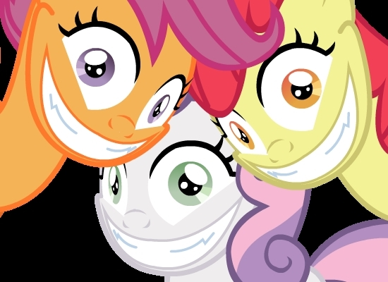

Экспрессивное поведение и культура
Экспрессивное поведение
Выразительное, яркое проявление чувств, настроений.
Экспрессивное поведение используется при создании различных знаков.
Знак "фотографировать разрешено"

Знаки, используемые на олимпиаде Сочи-2014
Культурные различия
Всегда ли представители одной культуры могут правильно понять, что означают те или иные жесты другой культуры?
Конечно же, нет.

Что означает этот жест?
Что влияет на правильное распознавание экспрессивного поведения?
От каких факторов зависит способность правильно определить, какой эмоции соответствует то или иное поведение?
- Различие или схожесть культур?
- Различие или схожесть рас?
- Раса?
- Физические особенности человека, выражающего эмоции?
- Конкретная эмоция?
Всё вышеперечисленное
А что влияет на выражение эмоций?
Конечно же, то, настоящие это эмоции или наигранные. А ещё?
- Для японцев - присутствие или отсутствие наблюдателя (Экман)
- todo
Примеры проблем в изучении экспрессии
- Представители культуры Dani (Новая Гвинея) не проводят различия между злостью и отвращением.
Представители культуры South Fore (Новая Гвинея) не проводят различия между страхом и удивлением. Правильное определение одной из этих двух эмоции по её проявлению - проблема и для представителей западной культуры!
- Культурные ограничения и нормы: например, японцы скрывают отрицательные эмоции, улыбаясь даже после неприятных событий.
- Если мы пытаемся найти различие между культурами, результаты могут искажаться из-за проникновения западной культуры в остальные продвинутые (в частности, распространением голливудских фильмов).
- Обычно люди испытывают более одного чувства одновременно.
В рамках одной и той же эмоции существуют более тонкие различия. Пример Berry: ребёнок посетил какое-то "запрещённое" место и скрыл это от отца; отец разозлился и наказал ребёнка. В одной культуре злость может быть вызвана опасением за безопасность ребёнка в запрещённом месте. В другой - тем, что ребёнок не послушался отца. В третьей - тем, что ребёнок солгал отцу.
Решения проблем
- Просим респондента не выбрать одну эмоцию для изображения, а указать интенсивность каждой возможной эмоции.
- todo
Проводившиеся эксперименты
- Beaupré M., Hess U.: распознавание эмоций по снимкам в группе жителей Канады: белых, афроканадцев в первом поколении, азиатоканадцев в первом поколении.
- Пол Экман: распознавание эмоций по снимкам между американцами и племенем Dani (Новая Гвинея), между американцами и племенем South Fore (Новая Гвинея).
- Пол Экман: распознавание эмоций в группе из десяти культур (включая эстонцев, турков и японцев).
- Матсумото: изучение экспрессии японцев.
Эмоции
- Врождённые
- Приобретённые
Базовые врождённые эмоции...
Счастье

Безмятежность
Гнев
Грусть

Страх
Удивление
Отвращение
Презрение
Стыд
Замешательство

Результаты
В целом, базовые эмоции достаточно хорошо распознаются даже в случае, когда выражающий и распознающий принадлежат к разным культурам.
Вероятность правильного ответа незначительно выше в случае, когда они принадлежат к одной культуре.
Тем не менее, эмоции, выражаемые американцами, распознаются ещё лучше.
Интенсивность выражения эмоций японцами ниже, чем для многих других культур. А отрицательных эмоций - гораздо ниже.
Хотя в последнее время ситуация меняется.
В некоторых культурах проявления "близких" эмоций (например, пары удивление-страх) различаются хуже, чем в других.
Качество распознавания эмоций также зависит от внешности конкретного человека.
Например, брови помогают определить удивление:
Разработана система FACS кодирования выражений лица движениями отдельных мускулов (Экман)
А как насчёт животных?
У животных нет души.
Источники
Beaupré M., Hess U. Cross-cultural emotion recognition among Canadian ethnic groups // J. of Cross-Cultural Psychology. 2005. Vol. 36. P. 355-370.
Berry J. W., Poortinga Y. H., Segall M. H., Dasen P. R. Cross-cultural psychology: Research and applications – Cambridge, 2002.
Ekman P., Friesen W. V. The Repertoire Of Nonverbal Behavior Categories, origins, usage, and coding // Semiótica. 1969. Vol. 1. P. 49-98.
Ekman P. Universals And Cultural Differences In The Judgment Of Facial Expressions of Emotion // Nebraska symposium on motivation, 1971. Lincoln, 1972. P. 207—283.
Крейдлин Г.Е. Невербальная семиотика: Язык тела и естественный язык. – М., 2002.
Крейдлин Г. Е. Невербальные приветствия и прощания в разных культурах
Крейдлин Г. Е., Переверзева С. Тело в русском языке и в русской культуре (проект Института лингвистики)
Лабунская В. А. Экспрессия человека: общение и межличностное познание. – Ростов-на-Дону, 1999.
Стефаненко Т. Г. Этнопсихология. – М.: Институт психологии РАН, «Академический проект», 1999/
Спасибо за внимание
Эта презентация доступна по адресу penartur.github.com/socpsy